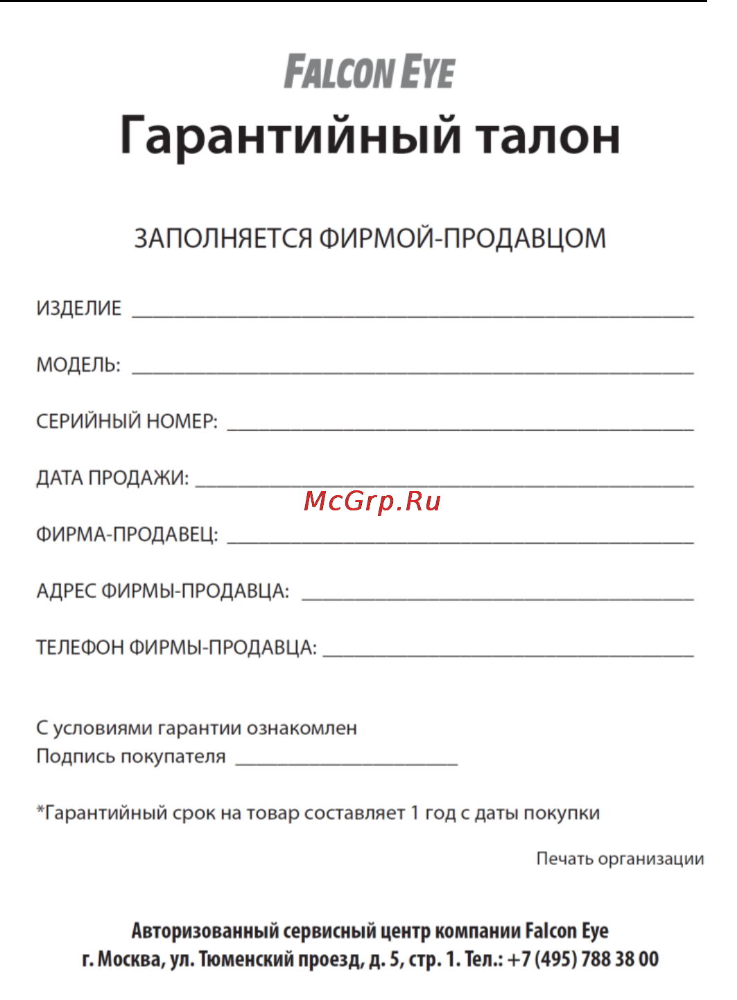
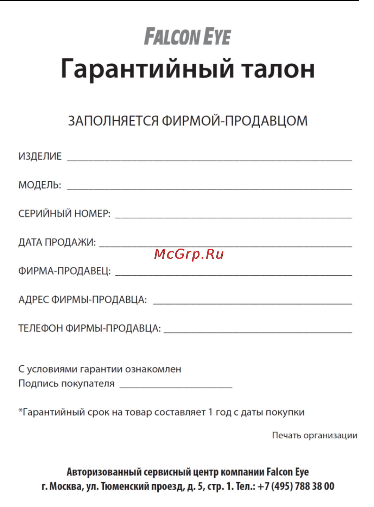

Мы не просто восстанавливаем кирпичные печи - мы пересоздаем их изнутри, превращая старую конструкцию в новую эффективную систему отопления.
Этот подход основан на глубоком понимании физики тепла, инженерных расчётах и передовых технологиях.
Нами разработаны современные технологии горения, которые в несколько раз уменьшают потребление топлива, а также увеличивают теплопередачу печи и ее теплоемкость.
Тепло - это искусство, которое мы создаем вновь и вновь.
 
